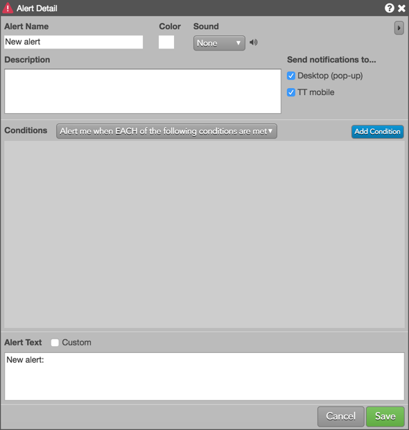
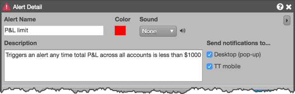
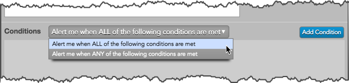
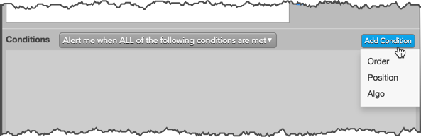
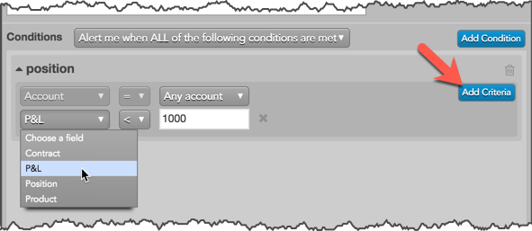
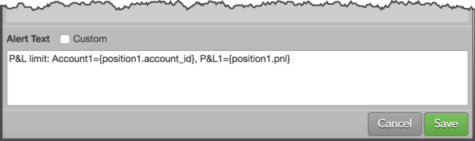

Use the Alert Manager to open the Alert Detail screen, which is used for creating your own custom alerts. Using the Alert Detail screen, you can create logic that determines when an alert is triggered based on order activity, positions, and algo behavior. For example, you can create an alert for when your orders get filled, or when your P/L falls below a certain amount in all of your trading accounts.
When creating an alert, you can also set whether to send the notification to your desktop or mobile device or both, as well as create your own custom notification messages.
To create an alert:
The Alert Detail screen appears.

Tip: TT provides some common alerts to use as templates when creating your own alerts. Click the drop down arrow in the New Alert button to use one of these templates.



Click the drop-down lists to choose a field, select an operator, and select a value. Fields and values vary based on the condition type being added.
As you add a condition, click Add Criteria to add logic to the alert condition type as needed.

For a description of each alert condition field, refer to Alerts Reference.
If needed, click the x to remove the criteria or to remove the condition.
Note: The condition choice selected for the alert (e.g., "Alert me when ALL of the following conditions are met") applies to the condition only and not to the criteria within a condition.
Otherwise, leave this unchecked and use the default alert text that appeared when you added your alert conditions.

The alert appears in the Alert Manager.